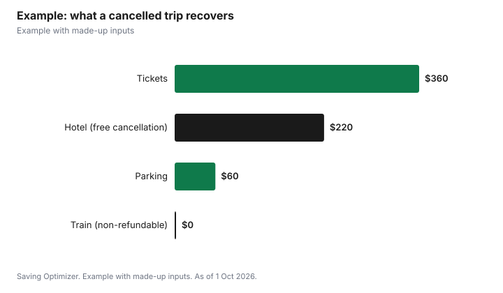

Entertainment · Canada
Concert Cancelled or Postponed in Canada: How to Get a Refund
If a concert is cancelled in Canada, you can generally expect a refund of what you paid through the original seller, but if it is postponed or rescheduled, your tickets usually stay valid and a refund is only offered if the event organizer allows one. Ticketmaster Canada says organizers set refund rules event by event; when refunds are available, a Request Refund button appears in your account, and the money goes back to your original payment method, usually within 5 to 7 business days of approval. If you bought resale tickets in Ontario, the law requires a written money-back guarantee that includes a refund if the event is cancelled before you can use the ticket. Hotels, flights and parking are separate, so check each booking's own cancellation rules.
Key takeaways
- Cancelled: refunds go through the original seller to the original payment method.
- Postponed: tickets stay valid while the organizer decides; no action needed yet.
- Rescheduled or moved: tickets are valid for the new date; refunds only if the organizer offers them.
- Ticketmaster refunds should appear in 5 to 7 business days after approval, depending on the bank.
- Ontario resale buyers must get a written money-back guarantee.
- Example with made-up inputs: $640 recovered out of a $780 concert trip.
Cancelled, postponed, rescheduled: what each means
Ticketmaster's help centre explains that a postponed event is one where the organizer is still working out whether to reschedule or cancel; your tickets remain valid and you do not need to do anything. If an event is rescheduled or moved, your tickets, including add-ons such as parking, are valid for the new date, and in some cases the organizer gives you the option to request a refund. If you bought at the venue's box office, contact that box office.
| Status | What it means | Your usual options |
|---|---|---|
| Cancelled | The event will not happen | Refund to original payment method |
| Postponed | New date not set yet | Hold your tickets and wait for an update |
| Rescheduled | New date set | Attend the new date, or request a refund if offered |
| Moved | New venue or city | Attend, or request a refund if offered |
How Ticketmaster refunds work in Canada
Ticketmaster Canada's help pages say event organizers set refund policies. If a refund is available for your order, you will see a Request Refund button under My Tickets in your account. Approved refunds go to the original payment method and should appear within 5 to 7 business days, depending on your bank. If you received tickets by transfer, the original buyer must request the refund from the point of purchase, so contact the person who sent them. If you bought through Ticketmaster's own resale marketplace, Ticketmaster says it notifies buyers of their options. If your card has expired or been replaced, Ticketmaster has a help article on refunds to a different card; follow it rather than buying a new ticket.
Resale tickets and Ontario's guarantee
Ontario's Ticket Sales Act, 2017 requires a secondary seller or resale platform to give you either written validation from the original seller that the ticket is valid, or a written money-back guarantee. The province says this means that if the ticket does not get you in, or the event is cancelled before the ticket can be used, the reseller or platform must refund you. The Act does not apply to events at schools, municipally or community-owned buildings or places of worship, and the price-cap and guarantee rules do not apply to resale that benefits a registered charity. If a seller refuses, you can file a complaint with Consumer Protection Ontario. Other provinces have different rules; check your provincial consumer protection office.
| How you got the ticket | Who to contact |
|---|---|
| Bought from Ticketmaster or another primary seller | That seller, through your account |
| Bought at the box office | The box office |
| Received by transfer | The person who bought it |
| Bought on a resale platform in Ontario | The platform, under its money-back guarantee |
| Bought from a stranger online | The seller; your protection may be limited |
Fees: are they refunded?
Whether service fees, processing fees and delivery fees come back depends on the seller's policy and the event, so read the email notice for your event carefully. Ticketmaster lists its fee types as a per-ticket service fee, a per-order processing fee, an optional delivery fee and a facility charge set by the venue. If the notice says only face value is refunded, ask the seller about fees before accepting a credit or voucher.
Travel, hotels and other costs
A ticket refund does not cover the trip around it. Hotels, flights, trains and parking are separate contracts with their own cancellation rules. When you book travel for a concert, choose refundable or free-cancellation rates where the price difference is small, and note each cancellation deadline in your calendar. If you paid with a credit card that includes trip cancellation insurance, read its terms to see whether an event cancellation is a covered reason; coverage varies by card. For flights within, to or from Canada, separate air passenger rules apply to airline-caused cancellations, not to your concert being cancelled.
Keep records
Save the order confirmation, the event change email and any refund approval notice, and take a screenshot of your account showing the event status. If a refund does not arrive in the time the seller gave, these records make a follow-up quick. For resale in Ontario, keep the written guarantee or validation you were given, since that is the document a complaint would rely on.
Example with made-up inputs
These numbers are an example with made-up inputs. A fan buys two concert tickets for $360 including fees, books a hotel for $220 with free cancellation until two days before, a train for $140 that is non-refundable, and prepaid parking for $60 that is refundable. The show is cancelled five days before. The ticket refund of $360 arrives on her card, she cancels the hotel for a full $220 refund, and gets the $60 parking refund. The $140 train fare is lost. She recovers $640 of $780.
| Cost | Paid | Recovered |
|---|---|---|
| Two tickets | $360 | $360 |
| Hotel (free cancellation) | $220 | $220 |
| Parking | $60 | $60 |
| Train (non-refundable) | $140 | $0 |
| Total | $780 | $640 |

Steps when your event changes
- Check your email and the event status in your ticket account.
- If postponed, hold your tickets and wait for the organizer's decision.
- If rescheduled, decide whether you can attend; request a refund if offered and you cannot.
- If cancelled, watch for the refund and note the date of approval.
- Cancel or change hotels and other bookings before their deadlines.
- If a resale seller will not refund in Ontario, file a complaint with Consumer Protection Ontario.
Common mistakes
- Selling a postponed ticket at a loss before the organizer decides.
- Booking non-refundable travel for a show months away.
- Asking the platform for a refund on a transferred ticket instead of the original buyer.
- Buying from strangers without a written guarantee.
More: avoiding resale scams and how dynamic pricing works.
Sources
- Ticketmaster Canada Help, refund requests, refund timing and fees, help.ticketmaster.ca, as of 1 Oct 2026.
- Ticketmaster Help, What happens if my event is postponed and What happens if my event is rescheduled or moved, help.ticketmaster.com, as of 1 Oct 2026.
- Government of Ontario, Buying tickets to events in Ontario, ontario.ca, as of 1 Oct 2026.
- Costs in the example are made-up inputs.
Frequently asked questions
Do I get a refund if a concert is cancelled in Canada?
Generally yes, through the original seller to your original payment method. Read the seller's notice for details on fees.
What happens if a concert is postponed?
Ticketmaster says your tickets stay valid while the organizer decides whether to reschedule or cancel. No action is needed yet.
Can I get a refund if a concert is rescheduled?
Only if the event organizer offers one. Otherwise your tickets are valid for the new date.
How long does a Ticketmaster refund take?
Ticketmaster Canada says refunds should appear within 5 to 7 business days, depending on your bank.
What if I bought resale tickets in Ontario?
The reseller or platform must give a written money-back guarantee, including a refund if the event is cancelled before the ticket can be used.
Are hotels refunded if a concert is cancelled?
Not automatically. Hotels, flights and parking follow their own cancellation rules.
Researched and drafted with AI assistance and fact-checked against official Canadian sources. How we create content.
Disclosure: Saving Optimizer may earn a commission if a partner link is added later, such as a travel insurance or credit card offer type. No partnership is claimed on this page. Education only, not legal advice.